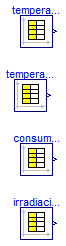
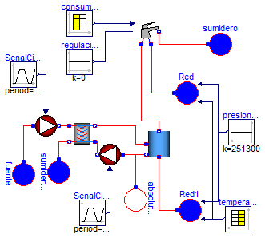
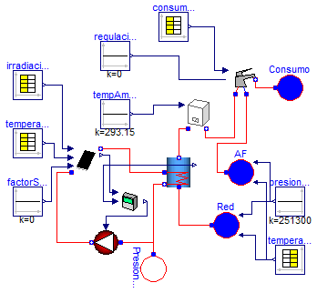

| Name | Description |
|---|---|
| CondicionesContorno | Modelo de pruebas de adquisicion de distintas condiciones de contorno |
| DemandaValvulaDeposito | Modelo que integra una instalacon de suministro de ACS |
| InstalacionSolarDomestica | Modelo de instalacion solare termica basica |

model CondicionesContorno
"Modelo de pruebas de adquisicion de distintas condiciones de contorno"
Modelica.Blocks.Sources.CombiTimeTable consumoACS(
tableOnFile=true,
offset={0},
smoothness=Modelica.Blocks.Types.Smoothness.LinearSegments,
extrapolation=Modelica.Blocks.Types.Extrapolation.HoldLastPoint,
tableName="perfilAnual_1",
fileName="CondicionesContorno\\perfilConsumoAnual.mat");
Modelica.Blocks.Sources.CombiTimeTable irradiacion(
tableOnFile=true,
smoothness=Modelica.Blocks.Types.Smoothness.ContinuousDerivative,
offset={1},
tableName="IrradAnual",
extrapolation=Modelica.Blocks.Types.Extrapolation.LastTwoPoints,
fileName="CondicionesContorno\\D3pen_Irrad_39_20.mat");
Modelica.Blocks.Sources.CombiTimeTable temperaturaRed(
tableOnFile=true,
extrapolation=Modelica.Blocks.Types.Extrapolation.HoldLastPoint,
smoothness=Modelica.Blocks.Types.Smoothness.ContinuousDerivative,
tableName="Ciudad_Real",
offset={273.15},
fileName="CondicionesContorno\\temperaturasRed.mat");
Modelica.Blocks.Sources.CombiTimeTable temperaturaSeca(
tableOnFile=true,
offset={0},
extrapolation=Modelica.Blocks.Types.Extrapolation.HoldLastPoint,
smoothness=Modelica.Blocks.Types.Smoothness.ContinuousDerivative,
fileName="CondicionesContorno\\TemperaturasSeca.mat",
tableName="D3_TempSec");
end CondicionesContorno;

model DemandaValvulaDeposito
"Modelo que integra una instalacon de suministro de ACS"
Acumuladores.Acumulador_Orden acumulador_Orden(
medium=Modelica.Thermal.FluidHeatFlow.Media.Water(),
T_ini=343.15,
espec=Soltermica.Acumuladores.CatalogoEquipos.IDROGAS_CV200SR(),
n=5);
Modelica.Thermal.FluidHeatFlow.Sources.Ambient sumidero(medium=
Modelica.Thermal.FluidHeatFlow.Media.Water(), p_Ambient=101300);
Modelica.Thermal.FluidHeatFlow.Sources.Ambient sumidero2(medium=
Modelica.Thermal.FluidHeatFlow.Media.Water(), p_Ambient=101300);
Modelica.Thermal.FluidHeatFlow.Sources.PrescribedAmbient Red(medium=
Modelica.Thermal.FluidHeatFlow.Media.Water());
Modelica.Thermal.FluidHeatFlow.Sources.PrescribedAmbient Red1(medium=
Modelica.Thermal.FluidHeatFlow.Media.Water());
Modelica.Blocks.Sources.CombiTimeTable temperaturaRed(
tableOnFile=true,
tableName="Ciudad_Real",
smoothness=Modelica.Blocks.Types.Smoothness.ContinuousDerivative,
offset={273.15},
fileName="CondicionesContorno\\temperaturasRed.mat");
Modelica.Blocks.Sources.Constant presionRed(k=251300);
Modelica.Blocks.Sources.CombiTimeTable consumoACS(
tableOnFile=true,
offset={0},
smoothness=Modelica.Blocks.Types.Smoothness.LinearSegments,
extrapolation=Modelica.Blocks.Types.Extrapolation.HoldLastPoint,
tableName="perfilAnual_1",
fileName="CondicionesContorno\\perfilConsumoAnual.mat");
Valvulas.Griferia.Monomando monomando(
medium=Modelica.Thermal.FluidHeatFlow.Media.Water(),
dp_grifo=251300,
Kv_grifo=0.0002);
Modelica.Blocks.Sources.Constant regulacionTemperatura(k=0);
Intercambiadores.Placas.IntercambiadorPlacas intercambiadorPlacas(
n=4,
medium_1=Modelica.Thermal.FluidHeatFlow.Media.Water(),
medium_2=Modelica.Thermal.FluidHeatFlow.Media.Water(),
espec=Soltermica.Intercambiadores.Placas.CatalogoEquipos.Fagor_IP_50(),
T_ini=293.15);
Bombas.Circuladores.Circulador circulador(
medium=Modelica.Thermal.FluidHeatFlow.Media.Water(),
espec=Soltermica.Bombas.Circuladores.CatalogoEquipos.GRUNDFOS_UPS_25_120(),
T_ini=293.15);
Modelica.Blocks.Sources.Trapezoid SenalCirculador(
rising=0.01,
width=120,
falling=0.01,
period=3600,
startTime=10);
Modelica.Thermal.FluidHeatFlow.Sources.Ambient fuente(medium=
Modelica.Thermal.FluidHeatFlow.Media.Water(), p_Ambient=101300);
Bombas.Circuladores.Circulador circuladorCarga(
medium=Modelica.Thermal.FluidHeatFlow.Media.Water(),
espec=Soltermica.Bombas.Circuladores.CatalogoEquipos.GRUNDFOS_UPS_25_120(),
T_ini=293.15);
Modelica.Blocks.Sources.Trapezoid SenalCirculadorCarga(
rising=0.01,
width=120,
falling=0.01,
period=3600,
startTime=10);
Modelica.Thermal.FluidHeatFlow.Sources.AbsolutePressure absolutePressure(
medium=Modelica.Thermal.FluidHeatFlow.Media.Water(), p=101300);
equation
connect(Red1.flowPort, acumulador_Orden.flowPort_a);
connect(temperaturaRed.y[1], Red1.T_Ambient);
connect(temperaturaRed.y[1], Red.T_Ambient);
connect(presionRed.y, Red.p_Ambient);
connect(presionRed.y, Red1.p_Ambient);
connect(acumulador_Orden.flowPort_b, monomando.caliente);
connect(monomando.fria, Red.flowPort);
connect(monomando.flowPort_b, sumidero.flowPort);
connect(consumoACS.y[1], monomando.caudal);
connect(regulacionTemperatura.y, monomando.temperatura);
connect(intercambiadorPlacas.flowPort_b_2, acumulador_Orden.flowPort_a1);
connect(sumidero2.flowPort, intercambiadorPlacas.flowPort_b_1);
connect(SenalCirculador.y, circulador.u);
connect(fuente.flowPort, circulador.flowPort_a);
connect(circulador.flowPort_b, intercambiadorPlacas.flowPort_a_1);
connect(circuladorCarga.flowPort_b, intercambiadorPlacas.flowPort_a_2);
connect(circuladorCarga.flowPort_a, acumulador_Orden.flowPort_b1);
connect(SenalCirculadorCarga.y, circuladorCarga.u);
connect(absolutePressure.flowPort, circuladorCarga.flowPort_a);
end DemandaValvulaDeposito;

model InstalacionSolarDomestica
"Modelo de instalacion solare termica basica"
Modelica.Thermal.FluidHeatFlow.Sources.Ambient Consumo(
medium=Modelica.Thermal.FluidHeatFlow.Media.Water(),
p_Ambient=101300,
T_Ambient=293.15);
Modelica.Thermal.FluidHeatFlow.Sources.AbsolutePressure PresionReferencia(
medium=Soltermica.Media.Propilenglicol_30_25(),
p=251300);
Acumuladores.Interacumuladores.Interacumulador_Mezcla interacumulador_Mezcla(
medium=Modelica.Thermal.FluidHeatFlow.Media.Water(),
medium_int=Soltermica.Media.Propilenglicol_30_25(),
espec=
Soltermica.Acumuladores.Interacumuladores.CatalogoEquipos.LAPESA_CV_80_M1S(),
T_ini=293.15,
n_int=2,
n=5);
ColectoresSolares.ColectorSolar colectorSolar(
medium=Soltermica.Media.Propilenglicol_30_25(),
espec=Soltermica.ColectoresSolares.CatalogoEquipos.BAXIROCA_PS_2_0(),
T_ini=293.15);
Modelica.Blocks.Sources.CombiTimeTable consumoACS(
tableOnFile=true,
offset={0},
smoothness=Modelica.Blocks.Types.Smoothness.LinearSegments,
extrapolation=Modelica.Blocks.Types.Extrapolation.HoldLastPoint,
tableName="perfilAnual_1",
fileName="CondicionesContorno\\perfilConsumoAnual.mat");
Modelica.Blocks.Sources.CombiTimeTable irradiacion(
tableOnFile=true,
smoothness=Modelica.Blocks.Types.Smoothness.ContinuousDerivative,
offset={1},
tableName="IrradAnual",
extrapolation=Modelica.Blocks.Types.Extrapolation.LastTwoPoints,
fileName="CondicionesContorno\\D3pen_Irrad_39_20.mat");
Modelica.Blocks.Sources.CombiTimeTable temperaturaSeca(
tableOnFile=true,
offset={0},
extrapolation=Modelica.Blocks.Types.Extrapolation.HoldLastPoint,
smoothness=Modelica.Blocks.Types.Smoothness.ContinuousDerivative,
tableName="D3_TempSec",
fileName="CondicionesContorno\\TemperaturasSeca.mat");
Modelica.Blocks.Sources.CombiTimeTable temperaturaRed(
tableOnFile=true,
extrapolation=Modelica.Blocks.Types.Extrapolation.HoldLastPoint,
smoothness=Modelica.Blocks.Types.Smoothness.ContinuousDerivative,
tableName="Ciudad_Real",
offset={273.15},
fileName="CondicionesContorno\\temperaturasRed.mat");
Modelica.Thermal.FluidHeatFlow.Sources.PrescribedAmbient Red(medium=
Modelica.Thermal.FluidHeatFlow.Media.Water());
Modelica.Blocks.Sources.Constant presionRed(k=251300);
Bombas.Circuladores.Circulador circulador(
medium=Soltermica.Media.Propilenglicol_30_25(),
espec=Soltermica.Bombas.Circuladores.CatalogoEquipos.GRUNDFOS_UPS_25_120(),
T_ini=293.15);
Controladores.ControladorSolar controladorSolar(
Temp_Acum=333,
DeltaT_on=4,
DeltaT_off=2);
Calderas.Caldera caldera(
espec=Soltermica.Calderas.CatalogoEquipos.BAXI_PLATINIUM_24_24F(),
medium=Modelica.Thermal.FluidHeatFlow.Media.Water(),
T_ini=293.15,
TempReg=50);
Modelica.Blocks.Sources.Constant tempAmbInt(k=293.15);
Valvulas.Griferia.Monomando monomando(
medium=Modelica.Thermal.FluidHeatFlow.Media.Water(),
dp_grifo=251300,
Kv_grifo=0.0002);
Modelica.Blocks.Sources.Constant regulacionTempertura(k=0);
Modelica.Thermal.FluidHeatFlow.Sources.PrescribedAmbient AF(medium=
Modelica.Thermal.FluidHeatFlow.Media.Water());
Modelica.Blocks.Sources.Constant factorSombras(k=0);
equation
connect(colectorSolar.flowPort_b, interacumulador_Mezcla.flowPort_a1);
connect(temperaturaSeca.y[1], colectorSolar.senalTemperatura);
connect(irradiacion.y[1], colectorSolar.senalIrradiacion);
connect(Red.flowPort, interacumulador_Mezcla.flowPort_a);
connect(temperaturaRed.y[1], Red.T_Ambient);
connect(presionRed.y, Red.p_Ambient);
connect(circulador.flowPort_b, colectorSolar.flowPort_a);
connect(circulador.flowPort_a, interacumulador_Mezcla.flowPort_b1);
connect(colectorSolar.SenTemp, controladorSolar.TempCol);
connect(interacumulador_Mezcla.SensorTemperatura, controladorSolar.TempDep);
connect(PresionReferencia.flowPort, circulador.flowPort_a);
connect(interacumulador_Mezcla.flowPort_b, caldera.flowPort_a);
connect(tempAmbInt.y, caldera.T_amb);
connect(monomando.flowPort_b, Consumo.flowPort);
connect(caldera.flowPort_b, monomando.caliente);
connect(consumoACS.y[1], monomando.caudal);
connect(controladorSolar.y, circulador.u);
connect(regulacionTempertura.y, monomando.temperatura);
connect(AF.p_Ambient, presionRed.y);
connect(AF.T_Ambient, temperaturaRed.y[1]);
connect(AF.flowPort, monomando.fria);
connect(factorSombras.y, colectorSolar.factorSombras);
end InstalacionSolarDomestica;